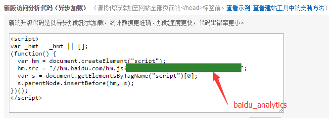

<html><head><meta charset='utf-8'><meta name='viewport' content='width=device-width, initial-scale=1'>
<meta name='applicable-device' content='pc'><meta name='keywords' content='电脑,电脑讲解,电脑技术,编程,电脑故障维修个人博客主题美化' />
<script src='../../highlight/highlight.pack.js'></script>
<link rel='stylesheet' type='text/css' href='../../highlight/styles/monokai.css'/>

<link rel='stylesheet' href='../../fenxiang/dist/css/share.min.css'>
<script src='../../fenxiang/src/js/social-share.js'></script>
<script src='../../fenxiang/src/js/qrcode.js'></script>

</head><body><script>hljs.initHighlightingOnLoad();</script><script>
var system ={};  
var p = navigator.platform;       
system.win = p.indexOf('Win') == 0;  
system.mac = p.indexOf('Mac') == 0;  
system.x11 = (p == 'X11') || (p.indexOf('Linux') == 0);     
if(system.win||system.mac||system.xll){
document.write("<link href='../css/3.css' rel='stylesheet' type='text/css'>");}else{ document.write("<link href='../css/3wap.css' rel='stylesheet' type='text/css'>");}</script><script src='../../js/3.js'></script><div class='div2'><div class='heading_nav'><ul><div><li><a href='../../index.html'>首页</a></li>
</div><div onclick='hidden1()' >分享</div>
</ul></div></div>
<div id='heading_nav2'> 
<li class='row' >
<div class='social-share' data-mode='prepend'><a href='javascript:' class='social-share-icon icon-heart'></a></div></li></div><script charset='utf-8' src='../../3/js/hengfu.js'></script><script charset='utf-8' src='../../3/js/hengfu2.js'></script><hr><div class='div1'><div class='biaoti'><center>个人博客主题美化</center></div><div class='banquan'>原文出处:本文由博客园博主小小咸鱼YwY提供。<br/>
原文连接:https://www.cnblogs.com/pythonywy/p/11402682.html</div><br>
    <h2 id="个人博客主题美化">个人博客主题美化</h2>
<h4 id="选择主题">选择主题</h4>
<p>Hexo默认的主题是landscape，推荐以下主题：</p>
<ol>
<li><a href="https://github.com/shenliyang/hexo-theme-snippet#hexo-theme-snippet">snippet</a></li>
<li><a href="https://github.com/iTimeTraveler/hexo-theme-hiero#hiero">Hiero</a></li>
<li><a href="https://github.com/tangkunyin/hexo-theme-jsimple#jsimple">JSimple</a></li>
<li><a href="https://github.com/chaooo/hexo-theme-BlueLake#bluelake">BlueLake</a></li>
</ol>
<p>详见：https://github.com/search?q=hexo-theme</p>
<h4 id="应用主题">应用主题</h4>
<ol>
<li>下载主题</li>
<li>将下载好的主题文件夹，粘贴到站点目录的<code>themes</code>下。</li>
<li>更改站点配置文件<code>_config.yml</code> 的theme字段，为主题文件夹的名称：</li>
</ol>
<pre><code><code># Extensions## Plugins: https://hexo.io/plugins/## Themes: https://hexo.io/themes/theme: &lt;主题文件夹的名称&gt;</code></pre>
<h4 id="主题优化">主题优化</h4>
<p>以上主题都有比较详细的说明文档，本节主要解决主题优化的常见问题。</p>
<p>主题优化一般包括：</p>
<ul>
<li><p><strong>设置「RSS」</strong></p></li>
<li><p><strong>添加「标签」页面</strong></p></li>
<li><p><strong>添加「分类」页面</strong></p></li>
<li><p><strong>设置「字体」</strong></p>
<p>问题：引用国外字体镜像较慢。</p>
<p>解决：可以改用国内的。将\themes*\layout_partials\head external-fonts.swig文件中fonts.google.com改成fonts.lug.ustc.edu.cn。</p></li>
<li><p><strong>设置「代码高亮主题」</strong></p></li>
<li><p><strong>侧边栏社交链接</strong></p>
<p>问题：图标哪里找？</p>
<p>解决：<a href="https://fontawesome.com/icons?d=gallery">Font Awesome</a></p></li>
<li><p><strong>开启打赏功能</strong></p>
<p>问题：微信支付宝二维码不美观，规格不一。</p>
<p>解决：<a href="https://cli.im/weixin">在线生成二维码</a></p></li>
<li><p><strong>设置友情链接</strong></p></li>
<li><p><strong>腾讯公益404页面</strong></p></li>
<li><p><strong>站点建立时间</strong></p></li>
<li><p><strong>订阅微信公众号</strong></p></li>
<li><p><strong>设置「动画效果」</strong></p>
<p>问题：慢，需要等待 JavaScript 脚本完全加载完毕后才会显示内容。<br />
解决：将主题配置文件<code>_config.yml</code>中，use_motion字段的值设为 <code>false</code> 来关闭动画。</p></li>
<li><p><strong>设置「背景动画」</strong></p></li>
</ul>
<p>主题优化还包括：</p>
<h5 id="添加背景图">添加背景图</h5>
<p>在 themes/*/source/css/_custom/custom.styl 中添加如下代码：</p>
<pre><code><code>body{    background:url(/images/bg.jpg);    background-size:cover;    background-repeat:no-repeat;    background-attachment:fixed;    background-position:center;}</code></pre>
<h5 id="修改logo字体">修改Logo字体</h5>
<p>在 <code>themes/*/source/css/_custom/custom.styl</code> 中添加如下代码：</p>
<pre><code><code>@font-face {    font-family: Zitiming;    src: url(&#39;/fonts/Zitiming.ttf&#39;);}.site-title {    font-size: 40px !important; font-family: &#39;Zitiming&#39; !important;}</code></pre>
<p>其中字体文件在 <code>themes/next/source/fonts</code> 目录下，里面有个 <code>.gitkeep</code> 的隐藏文件，打开写入你要保留的字体文件，比如我的是就是写入 <code>Zitiming.ttf</code> ，具体字库自己从网上下载即可。</p>
<h5 id="修改内容区域的宽度">修改内容区域的宽度</h5>
<p>编辑主题的 <code>source/css/_variables/custom.styl</code> 文件，新增变量：</p>
<pre><code><code>// 修改成你期望的宽度$content-desktop = 700px// 当视窗超过 1600px 后的宽度$content-desktop-large = 900px</code></pre>
<h5 id="网站标题栏背景颜色">网站标题栏背景颜色</h5>
<p>打开 <code>themes/*/source/css/_custom/custom.styl</code> ,在里面写下如下代码：</p>
<pre><code><code>.site-meta {  background: $blue; //修改为自己喜欢的颜色}</code></pre>
<h5 id="自定义鼠标样式">自定义鼠标样式</h5>
<p>打开 <code>themes/*/source/css/_custom/custom.styl</code> ,在里面写下如下代码：</p>
<pre><code><code>// 鼠标样式  * {      cursor: url(&quot;http://om8u46rmb.bkt.clouddn.com/sword2.ico&quot;),auto!important  }  :active {      cursor: url(&quot;http://om8u46rmb.bkt.clouddn.com/sword1.ico&quot;),auto!important  }</code></pre>
<h5 id="文章加密访问">文章加密访问</h5>
<p>打开 <code>themes/*/layout/_partials/head.swig</code>文件,在 ``之前插入代码：</p>
<pre><code><code>&lt;script&gt;    (function(){        if(&#39;{{ page.password }}&#39;){            if (prompt(&#39;请输入密码&#39;) !== &#39;{{ page.password }}&#39;){                alert(&#39;密码错误&#39;);                history.back();            }        }    })();&lt;/script&gt;</code></pre>
<p>写文章时加上<code>password: *</code>：</p>
<pre><code><code>---title: 2018date: 2018-10-25 16:10:03password: 123456---</code></pre>
<h5 id="实现点击出现桃心效果">实现点击出现桃心效果</h5>
<ol>
<li>在<code>/themes/*/source/js/src</code>下新建文件<code>click.js</code>，接着把以下粘贴到<code>click.js</code>文件中。<br />
代码如下：</li>
</ol>
<pre><code><code>!function(e,t,a){function n(){c(&quot;.heart{width: 10px;height: 10px;position: fixed;background: #f00;transform: rotate(45deg);-webkit-transform: rotate(45deg);-moz-transform: rotate(45deg);}.heart:after,.heart:before{content: &#39;&#39;;width: inherit;height: inherit;background: inherit;border-radius: 50%;-webkit-border-radius: 50%;-moz-border-radius: 50%;position: fixed;}.heart:after{top: -5px;}.heart:before{left: -5px;}&quot;),o(),r()}function r(){for(var e=0;e&lt;d.length;e++)d[e].alpha&lt;=0?(t.body.removeChild(d[e].el),d.splice(e,1)):(d[e].y--,d[e].scale+=.004,d[e].alpha-=.013,d[e].el.style.cssText=&quot;left:&quot;+d[e].x+&quot;px;top:&quot;+d[e].y+&quot;px;opacity:&quot;+d[e].alpha+&quot;;transform:scale(&quot;+d[e].scale+&quot;,&quot;+d[e].scale+&quot;) rotate(45deg);background:&quot;+d[e].color+&quot;;z-index:99999&quot;);requestAnimationFrame(r)}function o(){var t=&quot;function&quot;==typeof e.onclick&amp;&amp;e.onclick;e.onclick=function(e){t&amp;&amp;t(),i(e)}}function i(e){var a=t.createElement(&quot;div&quot;);a.className=&quot;heart&quot;,d.push({el:a,x:e.clientX-5,y:e.clientY-5,scale:1,alpha:1,color:s()}),t.body.appendChild(a)}function c(e){var a=t.createElement(&quot;style&quot;);a.type=&quot;text/css&quot;;try{a.appendChild(t.createTextNode(e))}catch(t){a.styleSheet.cssText=e}t.getElementsByTagName(&quot;head&quot;)[0].appendChild(a)}function s(){return&quot;rgb(&quot;+~~(255*Math.random())+&quot;,&quot;+~~(255*Math.random())+&quot;,&quot;+~~(255*Math.random())+&quot;)&quot;}var d=[];e.requestAnimationFrame=function(){return e.requestAnimationFrame||e.webkitRequestAnimationFrame||e.mozRequestAnimationFrame||e.oRequestAnimationFrame||e.msRequestAnimationFrame||function(e){setTimeout(e,1e3/60)}}(),n()}(window,document);</code></pre>
<ol>
<li>在<code>\themes\*\layout\_layout.swig</code>文件末尾添加：</li>
</ol>
<pre><code><code>&lt;!-- 页面点击小红心 --&gt;&lt;script type=&quot;text/javascript&quot; src=&quot;/js/src/clicklove.js&quot;&gt;&lt;/script&gt;</code></pre>
<h5 id="静态资源压缩">静态资源压缩</h5>
<p>在站点目录下：</p>
<pre><code><code>$ npm install gulp -g</code></pre>
<p>安装gulp插件：</p>
<pre><code><code>npm install gulp-minify-css --savenpm install gulp-uglify --savenpm install gulp-htmlmin --savenpm install gulp-htmlclean --savenpm install gulp-imagemin --save</code></pre>
<p>在 <code>Hexo</code> 站点下新建 <code>gulpfile.js</code>文件，文件内容如下：</p>
<pre><code><code>var gulp = require(&#39;gulp&#39;);var minifycss = require(&#39;gulp-minify-css&#39;);var uglify = require(&#39;gulp-uglify&#39;);var htmlmin = require(&#39;gulp-htmlmin&#39;);var htmlclean = require(&#39;gulp-htmlclean&#39;);var imagemin = require(&#39;gulp-imagemin&#39;);// 压缩css文件gulp.task(&#39;minify-css&#39;, function() {  return gulp.src(&#39;./public/**/*.css&#39;)  .pipe(minifycss())  .pipe(gulp.dest(&#39;./public&#39;));});// 压缩html文件gulp.task(&#39;minify-html&#39;, function() {  return gulp.src(&#39;./public/**/*.html&#39;)  .pipe(htmlclean())  .pipe(htmlmin({    removeComments: true,    minifyJS: true,    minifyCSS: true,    minifyURLs: true,  }))  .pipe(gulp.dest(&#39;./public&#39;))});// 压缩js文件gulp.task(&#39;minify-js&#39;, function() {    return gulp.src([&#39;./public/**/.js&#39;,&#39;!./public/js/**/*min.js&#39;])        .pipe(uglify())        .pipe(gulp.dest(&#39;./public&#39;));});// 压缩 public/demo 目录内图片gulp.task(&#39;minify-images&#39;, function() {    gulp.src(&#39;./public/demo/**/*.*&#39;)        .pipe(imagemin({           optimizationLevel: 5, //类型：Number  默认：3  取值范围：0-7（优化等级）           progressive: true, //类型：Boolean 默认：false 无损压缩jpg图片           interlaced: false, //类型：Boolean 默认：false 隔行扫描gif进行渲染           multipass: false, //类型：Boolean 默认：false 多次优化svg直到完全优化        }))        .pipe(gulp.dest(&#39;./public/uploads&#39;));});// 默认任务gulp.task(&#39;default&#39;, [  &#39;minify-html&#39;,&#39;minify-css&#39;,&#39;minify-js&#39;,&#39;minify-images&#39;]);</code></pre>
<p>只需要每次在执行 <code>generate</code> 命令后执行 <code>gulp</code> 就可以实现对静态资源的压缩，压缩完成后执行 <code>deploy</code> 命令同步到服务器：</p>
<pre><code><code>hexo ggulphexo d</code></pre>
<h5 id="修改访问url路径">修改访问URL路径</h5>
<p>默认情况下访问URL路径为：<code>domain/2018/10/18/关于本站</code>,修改为 <code>domain/About/关于本站</code>。 编辑 <code>Hexo</code> 站点下的 <code>_config.yml</code> 文件，修改其中的 <code>permalink</code>字段：</p>
<pre><code><code>permalink: :category/:title/</code></pre>
<h5 id="博文置顶">博文置顶</h5>
<ol>
<li><p>安装插件</p>
<p>$ npm uninstall hexo-generator-index --save<br />
$ npm install hexo-generator-index-pin-top --save</p></li>
</ol>
<p>然后在需要置顶的文章的Front-matter中加上top即可：</p>
<pre><code><code>---title: 2018date: 2018-10-25 16:10:03top: 10---</code></pre>
<ol>
<li>设置置顶标志</li>
</ol>
<p>打开：/themes/*/layout/_macro/post.swig，定位到</p>
<p>，插入以下代码即可：</p>
<pre><code><code>{% if post.top %}  &lt;i class=&quot;fa fa-thumb-tack&quot;&gt;&lt;/i&gt;  &lt;font color=7D26CD&gt;置顶&lt;/font&gt;  &lt;span class=&quot;post-meta-divider&quot;&gt;|&lt;/span&gt;{% endif %}</code></pre>
<h5 id="在右上角或者左上角实现fork-me-on-github">在右上角或者左上角实现fork me on github</h5>
<ol>
<li>选择样式<a href="https://blog.github.com/2008-12-19-github-ribbons/">GitHub Ribbons</a>,</li>
<li>修改图片跳转链接,将<code>&lt;a href=&quot;https://github.com/you&quot;&gt;</code>中的链接换为自己Github链接：</li>
<li>打开 <code>themes/next/layout/_layout.swig</code> 文件，把代码复制到<code>&lt;div class=&quot;headband&quot;&gt;&lt;/div&gt;</code>下面。</li>
</ol>
<h5 id="主页文章添加边框阴影效果">主页文章添加边框阴影效果</h5>
<p>打开 <code>themes/*/source/css/_custom/custom.styl</code> ,向里面加代码:</p>
<pre><code><code>// 主页文章添加阴影效果.post {   margin-top: 0px;   margin-bottom: 60px;   padding: 25px;   -webkit-box-shadow: 0 0 5px rgba(202, 203, 203, .5);   -moz-box-shadow: 0 0 5px rgba(202, 203, 204, .5);}</code></pre>
<h5 id="显示当前浏览进度">显示当前浏览进度</h5>
<p>修改<code>themes/*/_config.yml</code>，把 <code>false</code> 改为 <code>true</code>：</p>
<pre><code><code># Back to top in sidebarb2t: true# Scroll percent label in b2t buttonscrollpercent: true</code></pre>
<h5 id="创建分类页">创建分类页</h5>
<p>在终端窗口下，定位到 <code>Hexo</code> 站点目录下，新建：</p>
<pre><code><code>$ cd &lt;站点目录&gt;$ hexo new page categories</code></pre>
<h5 id="加入-广告">加入 广告</h5>
<p>主要有两种：<a href="https://ssp.baidu.com/static/register.html">百度SSP</a>和<a href="https://www.google.com/adsense/start/#/?modal_active=none">谷歌Adsense</a>。方法类似：</p>
<ol>
<li><p>注册，复制广告代码</p></li>
<li><p>部署到网站。</p>
<p>2.1. 新建 <code>theme/*/layout/_custom/google_ad.swig</code>，将 AdSense 上的代码粘贴进去</p>
<p>2.2. 头部。在 <code>theme/*/layout/_custom/head.swig</code> 中也粘贴一份</p>
<p>2.3. 每篇博客。在 <code>theme/*/layout/post.swig</code> 里中在希望看到的地方加上：</p>
<pre><code><code>{% include &#39;_custom/google_ad.swig&#39; %}</code></pre>
<p>例如：在 <code>&lt;div id=&quot;posts&quot; class=&quot;posts-expand&quot;&gt; &lt;/div&gt;</code> 中间插入，总代码如下：</p>
<pre><code><code>{% block content %}  &lt;div id=&quot;posts&quot; class=&quot;posts-expand&quot;&gt;    {{ post_template.render(page) }}    {% include &#39;_custom/google_ad.swig&#39; %}  &lt;/div&gt;{% endblock %}</code></pre></li>
<li><p>等待审核通过。如果失败，可再次申请。</p></li>
</ol>
<h5 id="添加萌萌哒">添加萌萌哒</h5>
<p>首先，安装npm包：</p>
<pre><code><code>npm install --save hexo-helper-live2d</code></pre>
<p>然后在hexo的配置文件<code>_config.yml</code>中添加如下配置，详细配置可以参考<a href="https://github.com/EYHN/hexo-helper-live2d/blob/master/README.zh-CN.md">文档</a>：</p>
<pre><code><code>live2d:
  enable: true
  scriptFrom: local
  pluginRootPath: live2dw/
  pluginJsPath: lib/
  pluginModelPath: assets/
  tagMode: false
  debug: false
  model:
    use: live2d-widget-model-shizuku
  display:
    position: right
    width: 150
    height: 300
  mobile:
    show: true</code></pre>
<p>然后下载模型，模型名称可以到<a href="https://github.com/xiazeyu/live2d-widget-models">这里</a>参考，一些模型的预览可以在<a href="https://huaji8.top/post/live2d-plugin-2.0/">这里</a>。</p>
<pre><code><code>npm install live2d-widget-model-shizuku</code></pre>
<p>所有模型列表如下：</p>
<ul>
<li><code>live2d-widget-model-chitose</code></li>
<li><code>live2d-widget-model-epsilon2_1</code></li>
<li><code>live2d-widget-model-gf</code></li>
<li><code>live2d-widget-model-haru/01</code> (use <code>npm install --save live2d-widget-model-haru</code>)</li>
<li><code>live2d-widget-model-haru/02</code> (use <code>npm install --save live2d-widget-model-haru</code>)</li>
<li><code>live2d-widget-model-haruto</code></li>
<li><code>live2d-widget-model-hibiki</code></li>
<li><code>live2d-widget-model-hijiki</code></li>
<li><code>live2d-widget-model-izumi</code></li>
<li><code>live2d-widget-model-koharu</code></li>
<li><code>live2d-widget-model-miku</code></li>
<li><code>live2d-widget-model-ni-j</code></li>
<li><code>live2d-widget-model-nico</code></li>
<li><code>live2d-widget-model-nietzsche</code></li>
<li><code>live2d-widget-model-nipsilon</code></li>
<li><code>live2d-widget-model-nito</code></li>
<li><code>live2d-widget-model-shizuku</code></li>
<li><code>live2d-widget-model-tororo</code></li>
<li><code>live2d-widget-model-tsumiki</code></li>
<li><code>live2d-widget-model-unitychan</code></li>
<li><code>live2d-widget-model-wanko</code></li>
<li><code>live2d-widget-model-z16</code></li>
</ul>
<p>下载完之后，在Hexo根目录中新建文件夹live2d_models，然后在node_modules文件夹中找到刚刚下载的live2d模型，将其复制到live2d_models中，然后编辑配置文件中的<code>model.use</code>项，将其修改为live2d_models文件夹中的模型文件夹名称。</p>
<ol>
<li><p>复制你喜欢的模型名字：</p>
<p>Epsilon2.1</p>
<p><a href="./images/个人博客主题美化0.png"></a></p>
<p>Gantzert_Felixander</p>
<p><a href="./images/个人博客主题美化1.png"></a></p>
<p>haru</p>
<p><a href="./images/个人博客主题美化2.png"></a></p>
<p>miku</p>
<p><a href="./images/个人博客主题美化3.png"></a></p>
<p>ni-j</p>
<p><a href="./images/个人博客主题美化4.png"></a></p>
<p>nico</p>
<p><a href="./images/个人博客主题美化5.png"></a></p>
<p>nietzche</p>
<p><a href="./images/个人博客主题美化6.png"></a></p>
<p>nipsilon</p>
<p><a href="./images/个人博客主题美化7.png"></a></p>
<p>nito</p>
<p><a href="./images/个人博客主题美化8.png"></a></p>
<p>shizuku</p>
<p><a href="./images/个人博客主题美化9.png"></a></p>
<p>tsumiki</p>
<p><a href="./images/个人博客主题美化10.png"></a></p>
<p>wanko</p>
<p><a href="./images/个人博客主题美化11.png"></a></p>
<p>z16</p>
<p><a href="./images/个人博客主题美化12.png"></a></p>
<p>hibiki</p>
<p><a href="./images/个人博客主题美化13.png"></a></p>
<p>koharu</p>
<p><a href="./images/个人博客主题美化14.png"></a></p>
<p>haruto</p>
<p><a href="./images/个人博客主题美化15.png"></a></p>
<p>Unitychan</p>
<p><a href="./images/个人博客主题美化16.png"></a></p>
<p>tororo</p>
<p><a href="./images/个人博客主题美化17.png"></a></p>
<p>hijiki</p>
<p><a href="./images/个人博客主题美化18.png"></a></p></li>
</ol>
<h3 id="插件配置">插件配置</h3>
<p>以下插件（评论系统、数据统计与分析、内容分享服务、搜索服务）各选一个即可。</p>
<h4 id="评论系统">评论系统</h4>
<table>
<thead>
<tr class="header">
<th style="text-align: left;"></th>
<th style="text-align: left;">推荐指数</th>
<th style="text-align: left;">优点</th>
<th style="text-align: left;">缺点</th>
</tr>
</thead>
<tbody>
<tr class="odd">
<td style="text-align: left;"><a href="https://valine.js.org/">Valine</a></td>
<td style="text-align: left;">4</td>
<td style="text-align: left;">每天30000条评论，10GB的储存</td>
<td style="text-align: left;">作者评论无标识</td>
</tr>
<tr class="even">
<td style="text-align: left;"><a href="https://livere.com/">来必力/livere</a></td>
<td style="text-align: left;">4</td>
<td style="text-align: left;">多种账号登录</td>
<td style="text-align: left;">评论无法导出</td>
</tr>
<tr class="odd">
<td style="text-align: left;"><a href="http://changyan.kuaizhan.com/">畅言</a></td>
<td style="text-align: left;">3</td>
<td style="text-align: left;">美观</td>
<td style="text-align: left;">必须备案域名</td>
</tr>
<tr class="even">
<td style="text-align: left;"><a href="https://github.com/imsun/gitment">gitment</a></td>
<td style="text-align: left;">3</td>
<td style="text-align: left;">简洁</td>
<td style="text-align: left;">只能登陆github评论</td>
</tr>
<tr class="odd">
<td style="text-align: left;">Disqus</td>
<td style="text-align: left;">1</td>
<td style="text-align: left;"></td>
<td style="text-align: left;">需要翻*墙</td>
</tr>
</tbody>
</table>
<h5 id="valine">Valine</h5>
<p>1.1. 获取APP ID 和 APP Key</p>
<p>请先登录或注册 <a href="https://leancloud.cn/">LeanCloud</a>, 进入控制台后点击左下角创建应用，</p>
<p>进入刚刚创建的应用，选择左下角的<code>设置</code>&gt;<code>应用Key</code>，然后就能看到你的<code>APP ID</code>和<code>APP Key</code>了。</p>
<p>1.2. 填写APP ID 和 APP Key到主题配置文件<code>_config.yml</code></p>
<p>1.3. 运行<code>hexo g&amp;&amp;hexo d</code>推送到博客。</p>
<h5 id="来必力livere">来必力/livere</h5>
<p>2.1. 登陆 <a href="https://livere.com/">来必力</a> 获取你的 LiveRe UID。</p>
<p>2.2. 填写LiveRe UID到主题配置文件<code>_config.yml</code></p>
<h5 id="畅言">畅言</h5>
<p>3.1.获取APP ID 和 APP Key</p>
<p>请先登录或注册 <a href="http://changyan.kuaizhan.com/">畅言</a>, 点击“立即免费获取畅言”，</p>
<p>新建站点，点击管理，点击评论插件&gt;评论管理，</p>
<p>点击后台总览，然后就能看到你的<code>APP ID</code>和<code>APP Key</code>了。</p>
<p>3.2. 填写APP ID 和 APP Key到主题配置文件<code>_config.yml</code></p>
<p>3.3. 运行<code>hexo g&amp;&amp;hexo d</code>推送到博客。</p>
<h5 id="gitment">gitment</h5>
<p>(如果博客搭建再码云上不能运行,个人没有解决)</p>
<p>4.1. 安装插件：</p>
<blockquote>
<p>npm i --save gitment</p>
</blockquote>
<p>4.2. 申请应用</p>
<p>在<a href="https://github.com/settings/applications/new">New OAuth App</a>为你的博客应用一个密钥:</p>
<pre><code><code>Application name:随便写Homepage URL:这个也可以随意写,就写你的博客地址就行Application description:描述,也可以随意写Authorization callback URL:这个必须写你的博客地址</code></pre>
<p>4.3. 配置</p>
<p>编辑主题配置文件<code>themes/*/_config.yml</code>:</p>
<pre><code><code># Gitment# Introduction: https://imsun.net/posts/gitment-introduction/gitment:  enable: true  mint: true # RECOMMEND, A mint on Gitment, to support count, language and proxy_gateway  count: true # Show comments count in post meta area  lazy: false # Comments lazy loading with a button  cleanly: false # Hide &#39;Powered by ...&#39; on footer, and more  language: # Force language, or auto switch by theme  github_user: {you github user id}  github_repo: 公开的git仓库,评论会作为那个项目的issue  client_id: {刚才申请的ClientID}  client_secret: {刚才申请的Client Secret}  proxy_gateway: # Address of api proxy, See: https://github.com/aimingoo/intersect  redirect_protocol: # Protocol of redirect_uri with force_redirect_pro</code></pre>
<h5 id="disqus">Disqus</h5>
<p>编辑 主题配置文件<code>themes/*/_config.yml</code>， 将 disqus 下的 enable 设定为 true，同时提供您的 shortname。count 用于指定是否显示评论数量。</p>
<pre><code><code>disqus:  enable: false  shortname:  count: true</code></pre>
<h4 id="数据统计与分析">数据统计与分析</h4>
<table>
<thead>
<tr class="header">
<th style="text-align: left;"></th>
<th style="text-align: left;">推荐指数</th>
<th style="text-align: left;">优点</th>
<th style="text-align: left;">缺点</th>
</tr>
</thead>
<tbody>
<tr class="odd">
<td style="text-align: left;"><a href="http://ibruce.info/2015/04/04/busuanzi/">不蒜子</a></td>
<td style="text-align: left;">4</td>
<td style="text-align: left;">可直接将访问次数显示在您在网页上（也可不显示）</td>
<td style="text-align: left;">只计数</td>
</tr>
<tr class="even">
<td style="text-align: left;">百度统计</td>
<td style="text-align: left;">3</td>
<td style="text-align: left;"></td>
<td style="text-align: left;">收录慢</td>
</tr>
</tbody>
</table>
<h5 id="不蒜子">不蒜子</h5>
<p>编辑 主题配置文件 <code>themes/*/_config.yml</code>中的<code>busuanzi_count</code>的配置项即可。</p>
<ul>
<li>当<code>enable: true</code>时，代表开启全局开关。</li>
<li>若<code>site_uv</code>（本站访客数）、<code>site_pv</code>（本站访客数）、<code>page_pv</code>（本文总阅读量）的值均为<code>false</code>时，不蒜子仅作记录而不会在页面上显示。</li>
</ul>
<p>注意：</p>
<pre><code><code>不蒜子官方因七牛强制过期原有的『dn-lbstatics.qbox.me』域名（预计2018年10月初），与客服沟通数次无果，即使我提出为此付费也不行，只能更换域名到『busuanzi.ibruce.info』！</code></pre>
<p>解决办法：</p>
<ol>
<li><p>找到主题调用不蒜子的swig文件。一般在”\themes*\layout_third-party\analytics\busuanzi-counter.swig”</p></li>
<li><p>更改域名</p>
<pre><code><code>把原有的：&lt;script async src=&quot;//dn-lbstatics.qbox.me/busuanzi/2.3/busuanzi.pure.mini.js&quot;&gt;&lt;/script&gt;域名改一下即可：&lt;script async src=&quot;//busuanzi.ibruce.info/busuanzi/2.3/busuanzi.pure.mini.js&quot;&gt;&lt;/script&gt;</code></pre></li>
</ol>
<h5 id="百度统计">百度统计</h5>
<ol>
<li>登录 <a href="http://tongji.baidu.com/">百度统计</a>，定位到站点的代码获取页面</li>
<li>复制统计脚本 id，如图：<br />
​<a href="./images/个人博客主题美化19.png"></a></li>
<li>编辑 主题配置文件<code>themes/*/_config.yml</code>，修改字段 <code>google_analytics</code>，值设置成你的统计脚本 id。</li>
</ol>
<h4 id="内容分享服务">内容分享服务</h4>
<table>
<thead>
<tr class="header">
<th style="text-align: left;"></th>
<th style="text-align: left;">推荐指数</th>
<th style="text-align: left;">优点</th>
<th style="text-align: left;">缺点</th>
</tr>
</thead>
<tbody>
<tr class="odd">
<td style="text-align: left;"><a href="http://share.baidu.com/">百度分享</a></td>
<td style="text-align: left;">4</td>
<td style="text-align: left;">稳定</td>
<td style="text-align: left;">不太美观</td>
</tr>
<tr class="even">
<td style="text-align: left;"><a href="https://github.com/revir/need-more-share2">need-more-share2</a></td>
<td style="text-align: left;">4</td>
<td style="text-align: left;">美观</td>
<td style="text-align: left;">更新不及时（比如微信分享API）</td>
</tr>
</tbody>
</table>
<h5 id="百度分享">百度分享</h5>
<p>编辑 主题配置文件，添加/修改字段 <code>baidushare</code>，值为 <code>true</code>即可。</p>
<pre><code><code># 百度分享服务baidushare: true</code></pre>
<h5 id="need-more-share2">need-more-share2</h5>
<p>编辑 主题配置文件，添加/修改字段 <code>needmoreshare2</code>，值为 <code>true</code>即可。</p>
<pre><code><code>needmoreshare2:  enable: true</code></pre>
<h4 id="搜索服务">搜索服务</h4>
<table>
<thead>
<tr class="header">
<th style="text-align: left;"></th>
<th style="text-align: left;">推荐指数</th>
<th style="text-align: left;">优点</th>
<th style="text-align: left;">缺点</th>
</tr>
</thead>
<tbody>
<tr class="odd">
<td style="text-align: left;">Local Search</td>
<td style="text-align: left;">4</td>
<td style="text-align: left;">配置方便</td>
<td style="text-align: left;"></td>
</tr>
<tr class="even">
<td style="text-align: left;">Swiftype</td>
<td style="text-align: left;">2</td>
<td style="text-align: left;"></td>
<td style="text-align: left;">需注册</td>
</tr>
<tr class="odd">
<td style="text-align: left;">Algolia</td>
<td style="text-align: left;">2</td>
<td style="text-align: left;"></td>
<td style="text-align: left;">需注册</td>
</tr>
</tbody>
</table>
<h5 id="local-search">Local Search</h5>
<p>添加百度/谷歌/本地 自定义站点内容搜索</p>
<ol>
<li><p>安装 <code>hexo-generator-searchdb</code>，在站点的根目录下执行以下命令：</p>
<pre><code><code>$ npm install hexo-generator-searchdb --save</code></pre></li>
<li><p>编辑 站点配置文件，新增以下内容到任意位置：</p>
<pre><code><code>search:  path: search.xml  field: post  format: html  limit: 10000</code></pre></li>
<li><p>编辑 主题配置文件，启用本地搜索功能：</p>
<pre><code><code># Local searchlocal_search:  enable: true</code></pre></li>
</ol>
<p>Error: watch /path/to/hexo/theme/ EMPERM</p>
<pre><code><code>因为目前在Windows Subsystem for Linux中，有些内容更改时，还不能实时更新到hexo服务器。所以需要重新编译，再启动服务器：</code></pre>
<p>$ hexo generate<br />
$ hexo server -s</p>
<pre><code><code>#### Template render error有时运行命令`$ hexo generate` 返回一个错误:</code></pre>
<p>FATAL Something’s wrong. Maybe you can find the solution here: http://hexo.io/docs/troubleshooting.html<br />
Template render error: (unknown path)</p>
<pre><code><code>这意味着有些认不出来单词在你的文件，并且很可能在你的新博文,或者配置文件`_config.yml`中，比如缩进错误：错误例子：</code></pre>
<p>plugins:<br />
hexo-generator-feed<br />
hexo-generator-sitemap<br />
```</p>

</div>
</div><hr><script charset='utf-8' src='../../js/sming.js'></script></body></html>